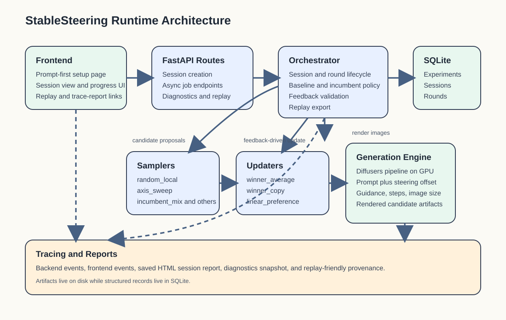
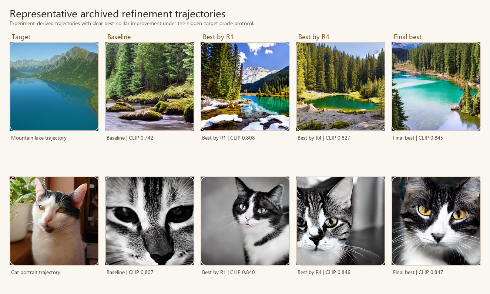
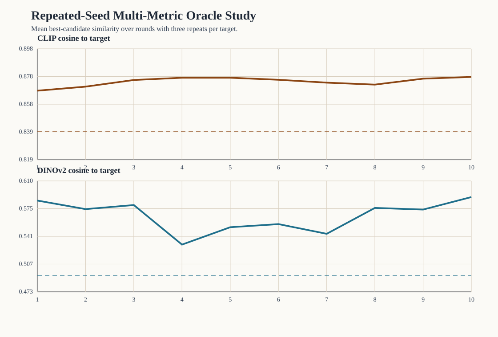
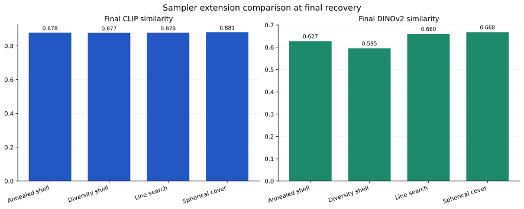
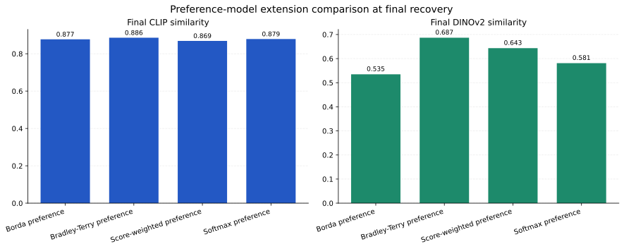
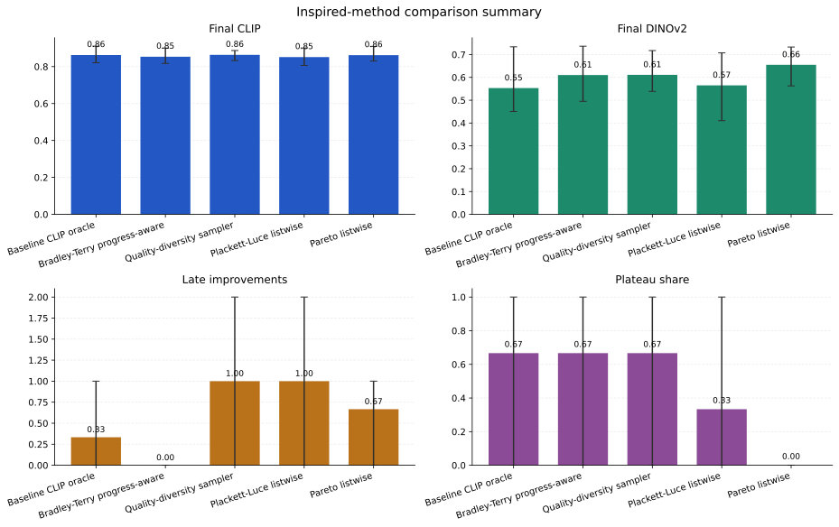

StableSteering: Interactive Preference-Guided Local Search for Iterative Text-to-Image Refinement
Abstract
Text-to-image diffusion systems offer strong one-shot generation ability, but iterative refinement remains awkward when users can recognize better images more easily than they can rewrite prompts. This paper studies an alternative interaction model in which refinement is posed as a repeated local search process driven by explicit preferences over candidate images. The central idea is to separate the persistent textual intent from a lower-dimensional session state that is updated over rounds of candidate generation, preference elicitation, and state revision. We present StableSteering as a methodological framework for this setting and evaluate it through a sequence of controlled proxy studies rather than a benchmark-superiority claim. The empirical program combines a preserved multi-round qualitative case study, oracle target-recovery experiments built from real images and manual captions, repeated-seed multi-metric evaluation, controlled sampler and preference-model slices, and focused plateau-diagnosis experiments. Across the repeated oracle target-recovery setting, mean best-candidate similarity improves from 0.828 to 0.881 under CLIP and from 0.452 to 0.595 under DINOv2. Broader proposal geometries and richer preference models materially affect behavior, and the strongest late-round progress arises when challenger pressure is preserved without fully suppressing the incumbent. The results support a narrower but scientifically useful conclusion: iterative preference-guided steering is a plausible inference-time control paradigm whose behavior depends strongly on the interaction between sampling, feedback modeling, and incumbent management.
1. Introduction
Recent text-to-image systems can produce compelling images from short prompts, yet local refinement remains an unsolved interaction problem. A user often knows that one candidate image is better than another, or that the current result is close but not quite right, while lacking a concise textual edit that expresses the desired change. Prompt editing therefore mixes two different burdens: specifying intent and describing iterative correction. This mismatch is especially visible in settings where the desired change is subtle, multidimensional, or partly perceptual.
StableSteering starts from a simple conceptual shift. Instead of treating refinement as repeated prompt rewriting, it treats refinement as iterative local search around a persistent prompt-conditioned intent. The prompt establishes the semantic task. A lower-dimensional steering state captures the current local direction of search. Each round proposes candidates near the current state, obtains user or oracle preferences over those candidates, and updates the state for the next round. The user no longer needs to produce a new prompt at every step; instead, the user supplies comparative information.
This framing connects text-to-image refinement to three established ideas. First, it resembles classical relevance feedback, where an initial query is improved from judgments over returned items rather than replaced outright. Second, it resembles preference-based online learning, where supervision arrives as relative judgments instead of absolute labels. Third, it resembles local black-box search, where proposal geometry and incumbent management shape whether the search exploits promising directions or escapes local stagnation. What distinguishes the present setting is that the search space is induced indirectly through a text-conditioned diffusion model, and the refinement signal is expressed through image judgments rather than scalar objective access.
The paper makes four contributions.
- It formulates iterative text-to-image refinement as preference-guided local search around a persistent prompt and an explicit steering state.
- It organizes a family of sampling, preference-modeling, and oracle policies within one common steering loop, enabling controlled comparison rather than one-off heuristics.
- It introduces a target-recovery proxy protocol in which real images and manually written captions define hidden targets, making round-by-round progress measurable without exposing the target image to the generator.
- It provides empirical evidence that the main scientific behavior of the loop is not monotonic improvement by default, but a tradeoff among proposal diversity, preference aggregation, and incumbent preservation.
The paper does not claim that StableSteering is the best refinement algorithm, nor that the current evidence matches the standards of a large human study or a broad benchmark campaign. Its claim is methodological: iterative preference-guided steering can be studied as a well-defined inference-time process, and this process exhibits interpretable regimes, failure modes, and design tradeoffs.
2. Related Work and Conceptual Positioning
2.1 Diffusion foundations and inference-time control
StableSteering operates on top of latent diffusion generation rather than replacing the underlying generator. Latent Diffusion Models made high-resolution text-to-image generation practical by moving diffusion into a compressed latent space, and classifier-free guidance became the dominant inference-time mechanism for strengthening prompt alignment (Rombach et al., 2022; Ho and Salimans, 2022). The present work therefore does not contribute a new generative backbone. Its novelty lies in how inference-time interaction is organized across rounds.
Several diffusion-control methods show that powerful editing can be achieved without retraining the full generator. Prompt-to-Prompt manipulates cross-attention to preserve layout while changing text semantics (Hertz et al., 2022). DiffusionCLIP and Imagic operate through learned or optimized text/image directions (Kim et al., 2022; Kawar et al., 2023). SDEdit and ControlNet enrich generation with image-based initialization or spatial conditioning (Meng et al., 2022; Zhang et al., 2023). SEGA further highlights the value of semantic directions as an inference-time steering primitive (Brack et al., 2023). StableSteering is adjacent to this literature, but conceptually narrower: it studies the interaction loop that chooses and updates steering directions, rather than proposing a new conditioning architecture.
2.2 Interactive multi-turn generation
A second nearby line of work studies iterative or multi-turn image generation more directly. AutoStudio, TheaterGen, and related systems investigate consistency and multi-turn control, often with stronger structure around subjects, scenes, or LLM-mediated prompt planning (Cheng et al., 2024; Xian et al., 2024). T2I-Copilot explores multi-agent text-to-image generation with prompt engineering and self-improvement (Lian et al., 2024). These systems are important because they show that multi-turn generation is a real use case rather than a hypothetical extension of one-shot prompting.
StableSteering differs in what it abstracts. Instead of treating the next prompt as the primary control object, it treats the steering state and candidate set as the primary objects of inference-time adaptation. This choice makes the work closer to local search and relevance feedback than to prompt-planning systems, even though all of these approaches are motivated by the limits of one-shot prompting.
2.3 Preference-guided diffusion alignment
Preference signals are increasingly used to align diffusion models. ImageReward learns a reward model for text-to-image preferences and uses that model for evaluation and optimization (Xu et al., 2023). DPOK, reward-feedback learning, and related methods use preference-derived signals to fine-tune diffusion models or associated policies (Fan et al., 2024; Yang et al., 2023; Croitoru et al., 2025). Training Diffusion Models with Reinforcement Learning and related work further show that diffusion behavior can be improved with reinforcement-style objectives (Black et al., 2024; Miao et al., 2024).
StableSteering differs in locus. These papers modify model parameters or learned objectives. StableSteering keeps the generator fixed during interaction and instead updates a session-level state. This is a weaker claim, but also a different scientific question: what can be achieved by preference-guided inference-time search before one pays the cost of model-level adaptation?
2.4 Preference search, ranking, and relevance feedback
The methodology here is also connected to older literatures that are rarely discussed in text-to-image papers. Classical relevance feedback updates a query from judgments over retrieved results rather than from a newly written query; Rocchio-style updates are the canonical example (Rocchio, 1971; Salton and Buckley, 1990). Preference-based online learning and dueling-bandit formulations likewise study how relative comparisons can guide sequential decision making (Bengs et al., 2021). Listwise ranking models such as Plackett-Luce and pairwise models such as Bradley-Terry provide principled ways to convert partial rankings or pairwise preferences into latent utilities. These analogies are conceptually productive for StableSteering because the system receives relative judgments over candidate images, not direct access to a scalar ground-truth objective.
2.5 Search-space coverage and diversity maintenance
A final conceptual anchor is quality-diversity search. MAP-Elites and related methods show that covering a search space with diverse, high-performing candidates can be more informative than following a single exploitative trajectory (Mouret and Clune, 2015). This perspective helps explain a recurring empirical phenomenon in StableSteering: repeated incumbent carry-forward can freeze visible progress even when the search has not exhausted useful alternatives. Quality-diversity ideas therefore motivate broader proposal geometries and explicit challenger preservation in later experiments.
In summary, StableSteering should be read neither as a new diffusion architecture nor as a new preference-trained model. It is best understood as an inference-time interaction framework that sits at the intersection of diffusion control, preference-guided search, and iterative relevance-feedback-style refinement.
3. Problem Formulation and Conceptual Pipeline
Let (p) denote the persistent text prompt and let (z_t \in \mathbb{R}^d) denote the steering state at round (t). The state is not assumed to be semantically interpretable coordinate by coordinate. It is simply the current point in a low-dimensional control space used to generate the next candidate batch.
At round (t), the sampler proposes (k) steering perturbations (s_t^{(1)}, \dots, s_t^{(k)}) around the current state. The diffusion renderer then produces a candidate set
where (G) is a fixed generator with parameters (\theta). The user, or an oracle in proxy experiments, provides feedback (f_t) over the batch (C_t). A normalization map converts that feedback into a comparable internal signal:
An update operator (U) then produces the next steering state:
where (\phi) denotes the parameters of the chosen update rule rather than learned model parameters. The loop repeats until a stopping condition is met.
This formulation separates three modeling choices that are often conflated in iterative generation systems:
- Sampling model: how the candidate batch explores the local neighborhood around the current state.
- Preference model: how ratings, pairwise choices, or rankings are transformed into a batch-level update signal.
- Steering policy: how the next state balances incumbent preservation against challenger influence.
The corresponding conceptual pipeline is shown in Figure 1.

4. Methodology
4.1 Rendering model and steering state
The generator remains fixed within a session. The prompt (p) is constant, and all iterative behavior is expressed through the steering state (z_t), the proposal set (s_t^{(j)}), and the update rule. In the current implementation the steering state modulates prompt embeddings and generation settings at inference time, but the methodological point is more general: StableSteering treats iterative refinement as stateful search over a prompt-conditioned local control manifold.
The initial state is (z_0 = 0), which corresponds to a baseline prompt-only render. Round 1 always includes this unmodified baseline candidate. In later rounds, the previously selected winner is carried forward as an incumbent. This choice stabilizes the search but also creates the possibility of late-round stagnation, a phenomenon that becomes important in the experiments.
4.2 Candidate-sampling model families
The candidate sampler determines which local alternatives are visible at each round. StableSteering implements several families that can be grouped conceptually.
- Local exploit/explore samplers such as
random_localandexploit_orthogonalkeep proposals near the incumbent while mixing conservative and slightly broader offsets. - Axis and line-search samplers such as
axis_sweepandline_searchprobe interpretable directional patterns around the current state. - Coverage-oriented samplers such as
diversity_shell,spherical_cover, andquality_diversity_mixprioritize angular separation and broader neighborhood coverage. - Adaptive anti-plateau samplers such as
two_scale_cover,plateau_escape, andannealed_shellmix local and broader probes or adapt proposal geometry over time.
The proposal set at round (t) can be written abstractly as
where (\rho_t) is an effective search radius. In anti-stagnation variants, (\rho_t) may expand when repeated incumbent reuse signals that the search is locally frozen.
4.3 Preference elicitation and normalization
The framework supports several forms of user feedback: scalar ratings, winner-only selection, pairwise winner/loser choice, approve/reject markings, and ranked top-(k) lists. These raw forms are heterogeneous, so they are normalized into internal batch-level preference weights or contrasts.
For example, a scalar-rating round may yield normalized nonnegative weights (w_t^{(j)}) satisfying (\sum_j w_t^{(j)} = 1). A pairwise round may produce a winner-loser contrast. A top-(k) ranking may induce ordinal or probabilistic utilities over the entire batch. This normalization step is essential because it determines whether the update uses only the winner, the full ranking, or explicit positive-versus-negative evidence.
4.4 Update models
The simplest update rules are winner-centric:
where (z_t^{\star}) is the selected winner state and (\alpha \in (0,1]) controls step size. winner_copy, winner_average, and linear_preference differ mainly in how aggressively they move toward (z_t^{\star}).
Richer models use more of the batch. A score-weighted or softmax-weighted update forms a centroid of all candidate states:
where (r_t^{(j)}) is a normalized score and (\beta) controls concentration. A contrastive update moves toward preferred candidates and away from dispreferred ones:
Listwise and pairwise probabilistic models go one step further. borda_preference converts rankings into ordinal weights. plackett_luce_preference interprets rankings through a listwise choice model. bradley_terry_preference induces latent utilities from pairwise comparisons implied by the batch. These models matter because they transform feedback from “pick the best image” into “estimate a structured preference surface over the batch.”
4.5 Oracle models for target-recovery evaluation
The main quantitative validation in this paper uses oracle-driven target recovery. Each task starts from a real image (y) and a manually written caption (p). The generator sees only (p), not (y). The oracle chooses winners by comparing candidate images to the hidden target (y) in a pretrained embedding space.
The simplest oracle is CLIP cosine similarity:
Later experiments also use DINOv2 for independent evaluation and explore ensemble or novelty-aware policies, for example
where (\nu_t^{(j)}) is a novelty or challenger bonus. The purpose of these oracle variants is not to claim that CLIP or DINO is the ground truth. Their purpose is to create controlled hidden-target tasks in which progress can be measured round by round.
4.6 Incumbent management and anti-stagnation controls
Carrying the current winner forward into the next round is intuitively attractive because it preserves the best-known image. However, it also creates a structural bias toward repeated re-selection. StableSteering therefore studies incumbent handling explicitly.
The framework includes three increasingly strong anti-stagnation ideas:
- Radius expansion after repeated same-image reuse.
- Soft incumbent penalties, which reduce incumbent dominance without forbidding it.
- Hard incumbent cooldown, which temporarily excludes the incumbent from winner selection.
These choices are important because visible plateauing in iterative refinement often has less to do with “poor generation quality” than with the interaction between incumbent carry-forward, narrow proposal geometry, and winner-only updates.
5. Experimental Methodology
5.1 Research questions
The experiments are organized around four questions.
- RQ1: Can iterative steering produce measurable progress toward a hidden visual target when the generator receives only a caption?
- RQ2: Do different sampling and preference models materially change the behavior of the loop?
- RQ3: Why do many iterative runs appear to stop changing visually even when more rounds remain?
- RQ4: Which anti-stagnation strategies preserve challenger pressure without destroying final alignment?
5.2 Shared runtime setting
All experiments use the same real diffusion backend: runwayml/stable-diffusion-v1-5 through Diffusers on GPU. The paper intentionally studies inference-time steering on a fixed generator rather than model fine-tuning. Unless otherwise noted, images are generated at 512×512, rounds are small-budget sessions rather than exhaustive searches, and all reported bundles are archived in the repository with manifests, summaries, and figures.
5.3 Preserved qualitative case study
The qualitative case study is a five-round preserved session starting from a product-photography prompt for an electric motorcycle. Its purpose is illustrative rather than statistical. It shows the mechanics of the loop in a fully archived session: baseline prompt render, successive winner selection, and final incumbent preservation.

5.4 Oracle target-recovery protocol
The main quantitative protocol uses real images paired with manually written captions. For each target image (y), generation begins from the caption alone. The hidden target is used only by the oracle that scores candidates. The base oracle study uses 3 targets, 10 rounds per target, 4 candidates per round, and a fixed steering configuration. This yields 120 candidate images in total.
The repeated-seed extension repeats each target 3 times under different deterministic seeds, yielding 9 runs, 90 rounds, and 360 candidate rows. Final evaluation is reported under both CLIP and DINOv2. This reduces the risk that results reflect one unusually favorable run or one embedding family alone.
5.5 Controlled module slices
To isolate design choices inside the steering loop, the paper includes several matched-budget slices.
- Sampler slice: compares proposal geometries while holding update and oracle choice fixed.
- Preference-model slice: compares winner-centric, score-weighted, contrastive, and listwise updates while holding the proposal family fixed.
- Method-extension slice: introduces newer samplers (
annealed_shell,spherical_cover) and richer updaters (borda_preference,bradley_terry_preference) together with oracle-policy variants. - Incumbent-policy and progress-diagnosis slices: study plateauing directly through late-round movement, incumbent selection share, and plateau share.
The goal of these slices is not to declare one universal winner. The goal is to identify which modeling choices most strongly alter the search dynamics.
5.6 Human pairwise layer
The paper package also includes a small human pairwise evaluation protocol with curated pairs and annotation tooling. At present, it is protocol-ready but contains no collected human judgments. It is therefore part of the methodological infrastructure, not of the reported evidence.
6. Results
6.1 Hidden-target recovery is measurable and nontrivial
The most important outcome is that the loop supports measurable target recovery rather than only anecdotal improvement. In the base oracle target-recovery study, mean best-candidate CLIP similarity improves from 0.825 for the prompt-only baseline to 0.896 by round 10. In the repeated-seed multi-metric extension, mean CLIP similarity improves from 0.828 to 0.881, while mean DINOv2 similarity improves from 0.452 to 0.595.

These gains are scientifically meaningful for two reasons. First, they show that iterative preference-guided inference can do more than produce a large first-round batch. Second, they show that the loop is not solely improving under the metric that chooses winners: DINOv2 also improves on average even though it is not the selection oracle in the base repeated protocol.
6.2 Proposal geometry matters
The sampler comparison slice already suggested that broader or more structured proposals matter: diversity_shell and line_search both reached mean final CLIP similarity of approximately 0.882, compared with 0.867 for exploit_orthogonal in the same controlled slice. The later method-extension study reinforces this conclusion. spherical_cover achieved the strongest final DINOv2 score among new sampler families (0.668), while annealed_shell and diversity_shell both produced larger CLIP deltas (0.065) than several earlier local baselines.

This result is conceptually consistent with the search framing. If iterative refinement is treated as local search, then the candidate generator is not a neutral implementation detail. It is the mechanism that defines which corrections are even visible to the preference model at each round.
6.3 Preference modeling matters, but not in the same way
Richer feedback modeling does not guarantee uniformly better final scores, but it clearly changes behavior. In the earlier feedback slice, winner-centric updates remained competitive in a small study. In the method-extension comparison, however, bradley_terry_preference emerged as the strongest new updater, reaching final CLIP 0.886 and final DINOv2 0.687, outperforming borda_preference, score_weighted_preference, and softmax_preference on the combined proxy view.

The scientific interpretation is not that Bradley-Terry is “the best” preference model for iterative diffusion steering. Rather, the result shows that once candidate diversity is available, the way feedback is aggregated becomes consequential. Winner-only updates discard information that richer models can use.
6.4 Plateauing is a real structural failure mode
A recurrent phenomenon in oracle steering is that later rounds stop changing visually. Focused diagnosis experiments show that this is not merely subjective impression. In the compact diagnosis bundles, the baseline oracle policy exhibited high incumbent selection share and high plateau share. For example, the baseline CLIP-oracle policy in the later compact inspired-method study had incumbent selection share 0.73 and plateau share 0.67.
The diagnosis experiments show that plateauing is created by a three-way interaction:
- the incumbent is always present,
- proposals remain too local, and
- winner-centric preference updates reinforce incumbent dominance.

This explains why some early anti-stagnation fixes failed. Hard incumbent cooldown almost eliminated visible freezing, but it also harmed final CLIP alignment in matched-budget comparisons. The problem is therefore not just “make the loop move more.” The problem is preserving challenger pressure without discarding useful incumbent information.
6.5 The strongest current behavior comes from balancing diversity and incumbent pressure
The most informative later results come from the inspired-method and progress-diagnosis follow-ups. Quality-diversity-style proposal sets and listwise or pairwise probabilistic preference models reduce plateauing substantially. In the inspired-method comparison, the quality_diversity_mix + plackett_luce_preference + pareto_frontier_mix configuration achieved final DINOv2 0.655, CLIP delta 0.049, incumbent selection share 0.20, and plateau share 0.00. In the progress follow-up bundle, the Bradley-Terry progress-aware policy achieved final CLIP 0.883, final DINOv2 0.630, late improvements 1.33, incumbent selection share 0.60, and plateau share 0.33.

Together, these results support a more precise claim than “oracle steering works.” They suggest that the central design problem is not merely how to update (z_t), but how to co-design proposal geometry, preference aggregation, and incumbent handling so that the search neither freezes prematurely nor drifts away from the best recovered direction.
6.6 What is supported and what is not
The evidence supports the following claims.
- Iterative inference-time steering can produce measurable hidden-target recovery beyond prompt-only initialization.
- Sampling, preference modeling, and oracle policy materially change the behavior of the loop.
- Plateauing is a structural phenomenon with interpretable causes.
- Moderate incumbent discouragement and broader proposal coverage can improve late-round behavior.
The evidence does not support the following stronger claims.
- That StableSteering is superior to all prompt-editing or editing-based alternatives.
- That the best current policy is settled.
- That the oracle results directly translate to human preference.
- That the present manuscript satisfies the evidence bar of a large benchmark or user-study paper.
7. Discussion
The main conceptual lesson is that iterative text-to-image refinement should be studied as an interaction model, not only as a model-alignment problem. Even with a fixed diffusion backbone, the system designer has at least three levers: proposal geometry, preference aggregation, and incumbent handling. The experiments show that these levers produce qualitatively different search regimes.
This perspective helps reconcile several otherwise puzzling observations. First-round gains can be large because the initial batch already offers useful alternatives to the prompt-only baseline. Later-round gains can disappear not because the task is solved, but because the loop repeatedly reselects a strong incumbent under too-narrow proposals. Hard anti-incumbent interventions can restore motion while harming final alignment. These are characteristic local-search tradeoffs, not merely quirks of a particular script.
The broader implication is that inference-time steering may deserve a place between prompt engineering and model fine-tuning. Prompt rewriting asks too much linguistic precision from users. Model fine-tuning is too expensive for many interactive settings. Preference-guided local search offers an intermediate regime in which refinement is achieved through repeated judgments over candidate images.
8. Limitations and Future Work
The present paper has four major limitations.
- Proxy-heavy evaluation. The main quantitative studies use oracle similarity in pretrained embedding spaces. This is scientifically useful, but not a substitute for human evaluation.
- Small controlled studies. The prompt and target sets are still limited. The goal has been mechanism discovery rather than large-scale benchmarking.
- Single generator family. All reported experiments use one diffusion backbone and a consistent runtime regime. Cross-model generalization remains open.
- Incomplete human evidence. The human pairwise protocol is prepared but not yet populated with annotations.
The next high-value research steps are therefore clear: collect the human pairwise layer, broaden the target and prompt suite, test transfer across diffusion backbones and image-conditioned pipelines, and study adaptive stopping rules that are sensitive to stagnation rather than fixed round budgets alone.
9. Conclusion
This paper reframed iterative text-to-image refinement as preference-guided local search around a persistent prompt-conditioned steering state. StableSteering serves as a methodological framework for that problem: it holds the generator fixed, exposes candidate batches to human or oracle judgment, and studies how sampling, preference modeling, and incumbent management shape the trajectory. The experiments support a cautious but meaningful conclusion. Iterative steering can produce measurable hidden-target recovery, but its behavior is not governed by one component alone. The quality of the search depends jointly on the diversity of proposals, the fidelity of the preference model, and the policy used to protect or challenge the incumbent. The most interesting scientific outcome is therefore not a single winning heuristic, but a clearer picture of the design space for inference-time preference-guided refinement.
Data and Artifact Availability
All figures, preserved HTML reports, experiment summaries, and result tables referenced in this manuscript are archived under the repository paper package. The current manuscript is intentionally paired with an appendix that records the implemented module families and compact controlled slices in greater detail.
References
Bengs, V., Saha, A., and Hüllermeier, E. (2021). Preference-based online learning with dueling bandits: A survey. Journal of Machine Learning Research, 22(7), 1-108.
Black, K., Janner, M., Du, Y., Kostrikov, I., and Levine, S. (2024). Training diffusion models with reinforcement learning. International Conference on Learning Representations.
Brack, M., Friedrich, F., Hintersdorf, D., Struppek, L., Schramowski, P., and Kersting, K. (2023). SEGA: Instructing text-to-image models using semantic guidance. Advances in Neural Information Processing Systems.
Brooks, T., Holynski, A., and Efros, A. A. (2023). InstructPix2Pix: Learning to follow image editing instructions. Proceedings of the IEEE/CVF Conference on Computer Vision and Pattern Recognition, 18392-18402.
Cheng, J., Yin, B., Cai, K., Huang, M., Li, H., He, Y., Lu, X., Li, Y., Cheng, Y., Yan, Y., and Liang, X. (2024). TheaterGen: Character management with LLM for consistent multi-turn image generation. arXiv preprint arXiv:2404.18919.
Croitoru, F.-A., Hondru, V., Ionescu, R. T., Sebe, N., and Shah, M. (2025). Curriculum direct preference optimization for diffusion and consistency models. Proceedings of the IEEE/CVF Conference on Computer Vision and Pattern Recognition.
Fan, L., Liu, Y., Huang, Y., Li, Y., Zhang, Y., White, M., Aziz, W., and Yao, H. (2024). DPOK: Reinforcement learning for fine-tuning text-to-image diffusion models. arXiv preprint arXiv:2305.16381.
Hertz, A., Mokady, R., Tenenbaum, J., Aberman, K., Pritch, Y., and Cohen-Or, D. (2022). Prompt-to-Prompt image editing with cross-attention control. arXiv preprint arXiv:2208.01626.
Ho, J., and Salimans, T. (2022). Classifier-free diffusion guidance. arXiv preprint arXiv:2207.12598.
Jaiswal, S., Prabhudesai, M., Bhardwaj, N., Qin, Z., Zadeh, A., Li, C., Fragkiadaki, K., and Pathak, D. (2026). Iterative refinement improves compositional image generation. arXiv preprint arXiv:2601.15286.
Kawar, B., Tov, O., Mokady, R., Elnekave, E., Aberman, K., and Pritch, Y. (2023). Imagic: Text-based real image editing with diffusion models. Proceedings of the IEEE/CVF Conference on Computer Vision and Pattern Recognition, 6007-6017.
Kim, G., Kwon, T., and Ye, J. C. (2022). DiffusionCLIP: Text-guided diffusion models for robust image manipulation. Proceedings of the IEEE/CVF Conference on Computer Vision and Pattern Recognition, 2426-2435.
Lian, S., Lin, H., Yue, S., Huang, H., Zhang, H., Zhou, B., and Zhang, W. (2024). T2I-Copilot: Training-free multi-agent text-to-image generation with prompt engineering, model selection, and self-improvement. arXiv preprint arXiv:2410.03031.
Meng, C., He, Y., Song, Y., Song, J., Wu, J., Zhu, J.-Y., and Ermon, S. (2022). SDEdit: Guided image synthesis and editing with stochastic differential equations. International Conference on Learning Representations.
Miao, Z., Wang, J., Wang, Z., Yang, Z., Wang, L., Qiu, Q., and Liu, Z. (2024). Training diffusion models towards diverse image generation with reinforcement learning. Proceedings of the IEEE/CVF Conference on Computer Vision and Pattern Recognition, 10844-10853.
Mouret, J.-B., and Clune, J. (2015). Illuminating search spaces by mapping elites. arXiv preprint arXiv:1504.04909.
Rocchio, J. J. (1971). Relevance feedback in information retrieval. In G. Salton (Ed.), The SMART Retrieval System: Experiments in Automatic Document Processing. Prentice Hall.
Rombach, R., Blattmann, A., Lorenz, D., Esser, P., and Ommer, B. (2022). High-resolution image synthesis with latent diffusion models. Proceedings of the IEEE/CVF Conference on Computer Vision and Pattern Recognition, 10684-10695.
Salton, G., and Buckley, C. (1990). Improving retrieval performance by relevance feedback. Journal of the American Society for Information Science, 41(4), 288-297.
Wang, Z. J., Montoya, E., Munechika, D., Yang, H., Hoover, B., and Chau, D. H. (2023). DiffusionDB: A large-scale prompt gallery dataset for text-to-image generative models. Proceedings of the 61st Annual Meeting of the Association for Computational Linguistics, 729-758.
Xian, Y., Xie, P., Zhu, P., Xia, F., Tu, X., Sun, B., Chua, T.-S., and Dong, Q. (2024). AutoStudio: Crafting consistent subjects in multi-turn interactive image generation. arXiv preprint arXiv:2406.04363.
Xu, J., Liu, X., Wu, Y., Tong, Y., Li, Q., Ding, M., Tang, J., and Dong, Y. (2023). ImageReward: Learning and evaluating human preferences for text-to-image generation. arXiv preprint arXiv:2304.05977.
Yang, Y., Yu, T., Zhao, Z., Wang, D., Su, H., and Zhu, J. (2023). Using human feedback to fine-tune diffusion models without any reward model. arXiv preprint arXiv:2311.13231.
Zhang, L., Rao, A., and Agrawala, M. (2023). Adding conditional control to text-to-image diffusion models. Proceedings of the IEEE/CVF International Conference on Computer Vision, 3836-3847.